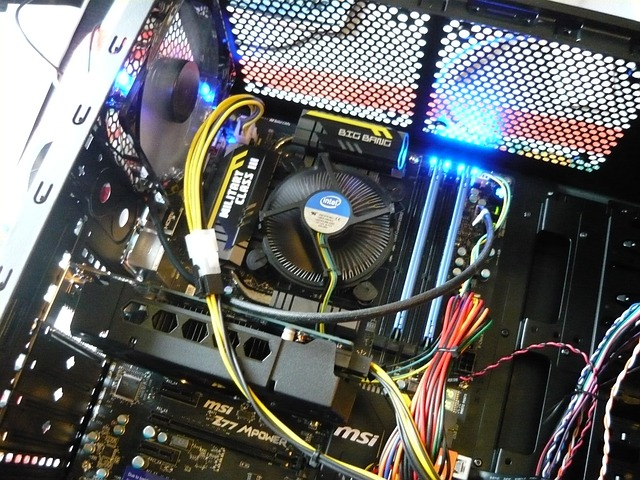

Home - Required Parts - FAQ - About Me
Building a computer can be an exciting and rewarding experience. It allows you to customize your machine to meet your specific needs and gives you a deeper understanding of how a computer works. Here's a step-by-step guide to help you build your own computer:
Define Your Purpose and Budget: Determine the primary purpose of your computer, whether it's for gaming, video editing, programming, or general use. Set a budget to guide your component choices.
Research and Choose Components: Research the latest computer components such as the CPU (Central Processing Unit), GPU (Graphics Processing Unit), RAM (Random Access Memory), storage (SSD or HDD), motherboard, power supply, and case. Consider factors such as compatibility, performance, and cost.
Prepare the Workspace: Find a clean and well-lit workspace with sufficient room to assemble your computer. Use an anti-static mat or work on a non-static surface to avoid damaging sensitive components.
Gather Necessary Tools: Ensure you have the necessary tools handy, including a screwdriver set, thermal paste (if not pre-applied), cable ties, and a flashlight.
Install the CPU and CPU Cooler: Locate the CPU socket on the motherboard and carefully place the CPU into it, aligning the notches or indicators. Apply a small amount of thermal paste on the CPU if necessary. Attach the CPU cooler according to the manufacturer's instructions.
Install RAM: Identify the RAM slots on the motherboard and open the retaining clips. Align the notches on the RAM stick with those on the slot and firmly press it down until the clips snap back into place.
Install Storage Devices: Connect your storage devices, such as SSDs or HDDs, to the appropriate SATA ports on the motherboard. Secure them in the drive bays using screws or tool-less mechanisms if available.
Install the Motherboard: Place the motherboard into the case, aligning it with the standoff screws. Screw the motherboard into place, ensuring it's secure and doesn't flex.
Connect Power Supply: Install the power supply unit (PSU) into the designated space in the case. Connect the necessary power cables to the motherboard, CPU, storage drives, and graphics card if applicable.
Install Graphics Card: If you have a dedicated graphics card, align it with the appropriate PCIe slot on the motherboard. Secure it by firmly pressing it down and attaching any necessary power connectors.
Connect Cables: Connect the necessary cables, including SATA cables for storage devices, front panel connectors (power switch, USB ports, audio, etc.), and case fans. Refer to the motherboard manual for proper connections.
Check Connections and Cable Management: Double-check all connections to ensure they are secure and properly seated. Organize cables using cable ties or routing holes to improve airflow and aesthetics.
Test the Computer: Connect the monitor, keyboard, and mouse. Plug in the power cord and turn on the computer. Check if the fans spin, lights turn on, and the monitor displays the BIOS screen. Verify that all components are functioning correctly.
Congratulations! You've successfully built your own computer. Remember to consult the manuals and online resources specific to your components for any additional instructions or troubleshooting tips. Enjoy your custom-built machine!
